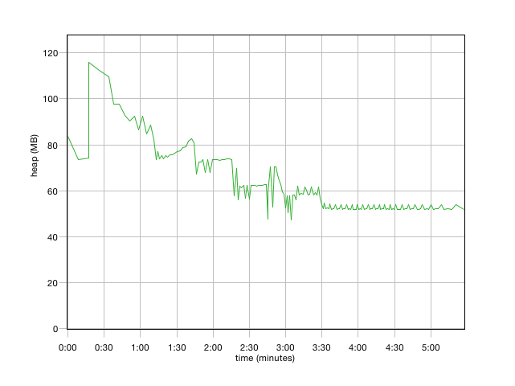
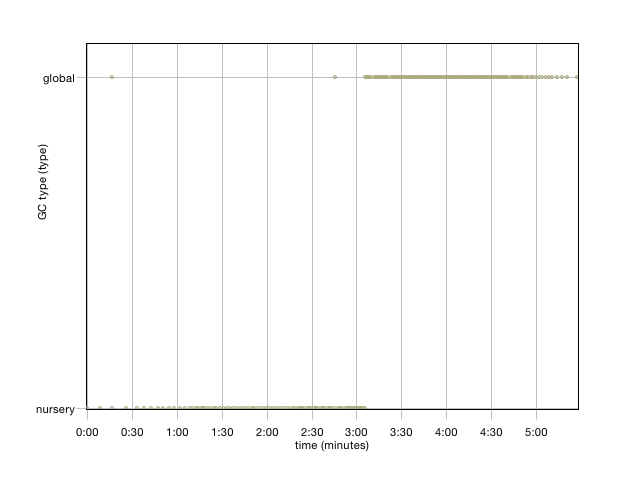
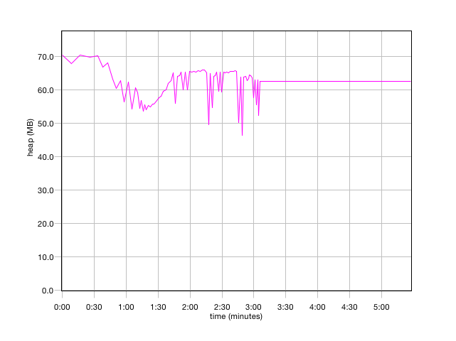
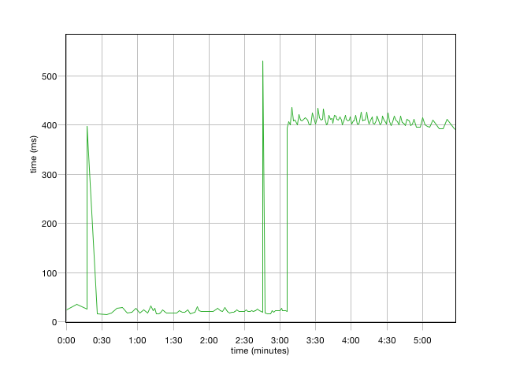
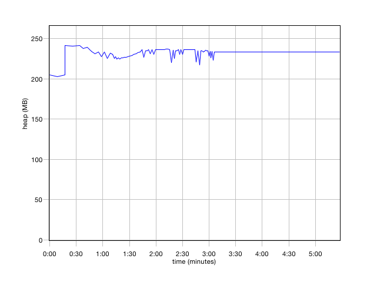

Version
![[Comment]](info.gif) Solaris JVM
Solaris JVM
Source name
gc.log
Summary
| Forced collection count | 0 |
| Full collections | 103 |
| Mean garbage collection pause (ms) | 409 |
| Mean interval between collections (ms) | 3178 |
| Number of collections triggered by allocation failure | 82 |
| Proportion of time spent in garbage collection pauses (%) | 13.4 |
| Proportion of time spent unpaused (%) | 86.6 |
| Rate of garbage collection (MB/minutes) | 1237 |
Free heap (after collection)
| Mean | Minimum | Maximum |
| heap (MB) | heap (MB) | heap (MB) |
| 62.0 | 47.4 | 116 |

GC type
| type | global | nursery |
| Total Instances | 103 | 82 |

Nursery size
| Mean | Minimum | Maximum |
| heap (MB) | heap (MB) | heap (MB) |
| 62.1 | 46.4 | 70.4 |

Pause time
| Mean | Minimum | Maximum | Total |
| time (ms) | time (ms) | time (ms) | time (ms) |
| 237 | 14.8 | 530 | 43922 |

Heap size
| Mean | Minimum | Maximum |
| heap (MB) | heap (MB) | heap (MB) |
| 232 | 202 | 241 |
